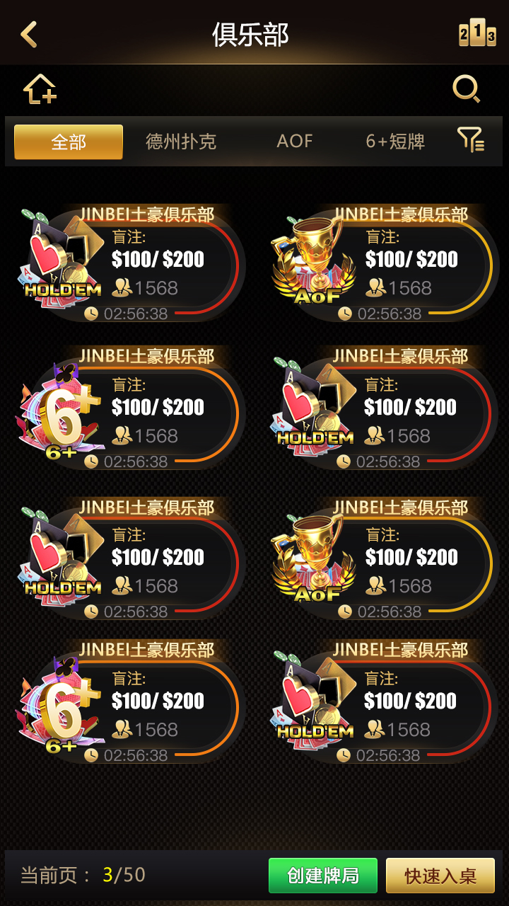

C++ 牌局核心
开始、计时、发牌、计算、结束及房间数据收发。
本页直接竞争“德州扑克”和“德州源码”，同时用可验证的 C++ 游戏核心与 TypeScript 客户端模块形成差异，不与账号下的完整解决方案、赛事系统或 AI 项目使用完全相同的内容。
开始、计时、发牌、计算、结束及房间数据收发。
启动、事件绑定、消息编解码、房间状态与 MTT 事件。
俱乐部接口、桌内聊天、牌谱列表和逐街详情。
大厅房间列表、入桌和重连事件。
座位、盲注、行动时间和局数。
检查条件、计时、发牌和回合推进。
计算结果并向房间和客户端回传。
以下图片全部来自线上 README 原有产品截图，已改为仓库内固定路径，减少外链失效。



四个专题分别承接游戏核心、客户端消息、俱乐部流程和牌谱界面搜索意图。
Telegram @xuzongbin001 · masterai918@gmail.com